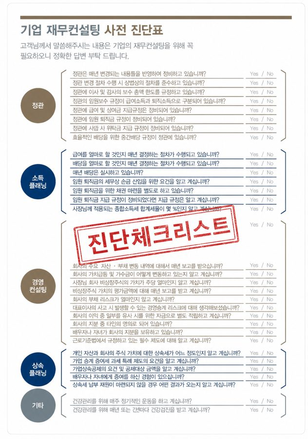
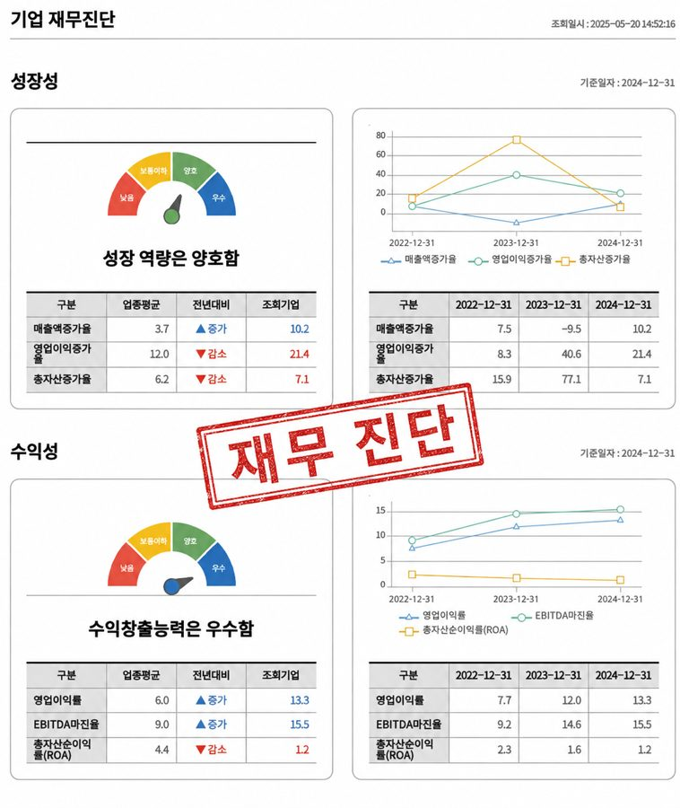
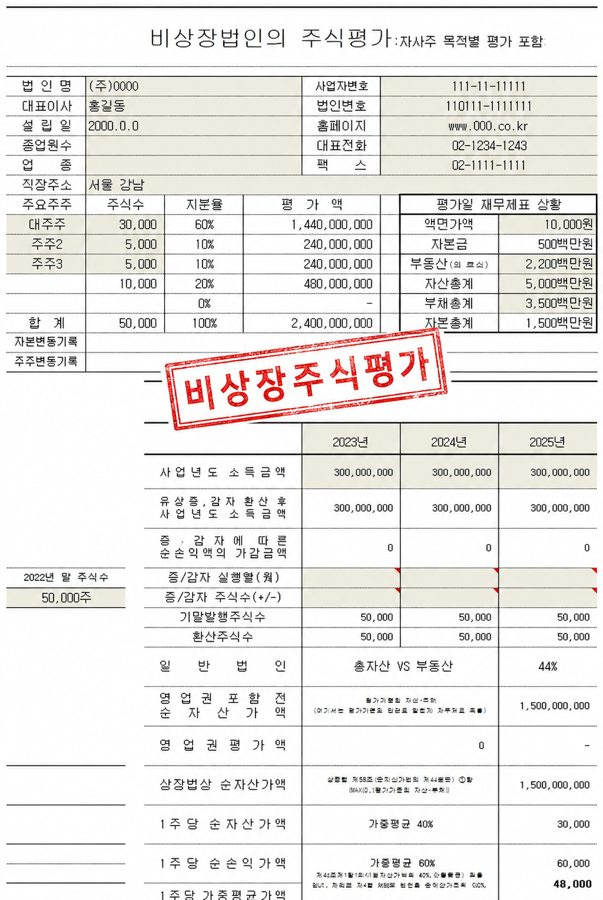
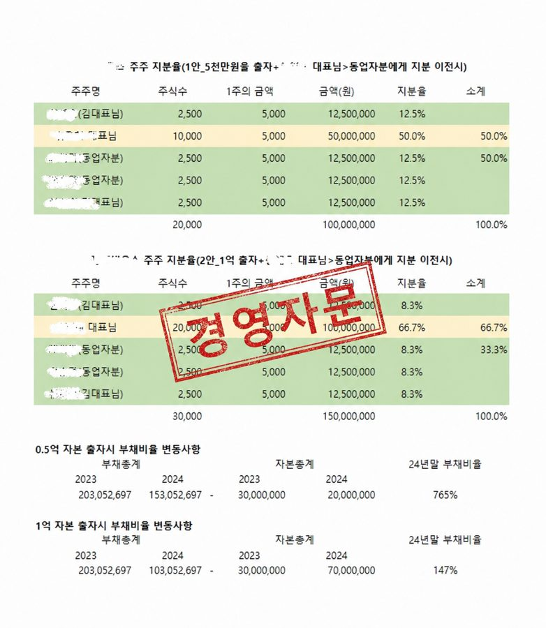

3
STEP 3
파트너CFO
"법인 전환이 대표님께 유리한지, 언제 어떤 방식이 최적인지를 숫자로 먼저 검증하고, 사업 성장에 유리하도록 실행합니다."
1:1 진단에서 실제로 사용하는 도구와 산출물
감(感)이 아니라 자료로 판단합니다. 아래는 실제 컨설팅에 사용하는 진단 서식과 산출물입니다.

진단 후 제공
법인 적합성 진단지
버는 힘·남기는 힘·굴리는 힘·차별화하는 힘·증명하는 힘·키우는 힘. 6개 축을 점수화해 대표님 회사가 지금 법인 구조에 적합한지, 무엇이 비어 있는지 한 장으로 보여드립니다.

사전 진단표
정관·소득 플래닝·경영·상속 40여 개 항목 점검

재무 진단
성장성·수익성을 업종 평균과 비교 분석

비상장주식 평가
전환 후 주식가치 산정, 증여·상속 대비

지분 구조 설계
출자 방식별 지분율·부채비율 시뮬레이션
* 실제 서식 예시이며, 기업 정보는 모두 가려지거나 임의 값으로 대체되었습니다.
전문 분야
- • 법인 전환 전략 (일반/세감면 포괄양수도)
- • 고소득 개인사업자 절세 구조 설계
- • 정책자금 조달 (벤처·이노비즈·중진공)
- • 부동산 취득 구조 설계
- • 가족법인 설계 (증여·상속 연계)
컨설팅 원칙
- ✓ 법적으로 방어 가능한 구조 우선
- ✓ 착수금 없이 먼저 진단
- ✓ 전문가 네트워크 원스톱 실행
- ✓ 5~10년 재무 로드맵 관점 설계